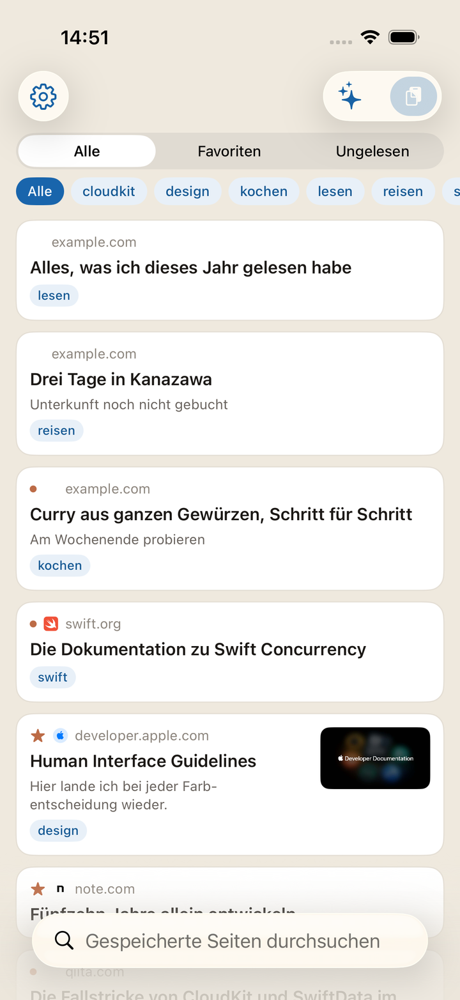
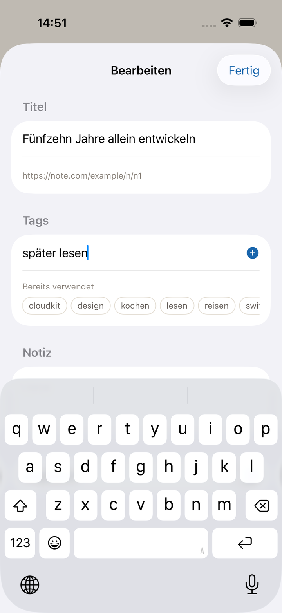
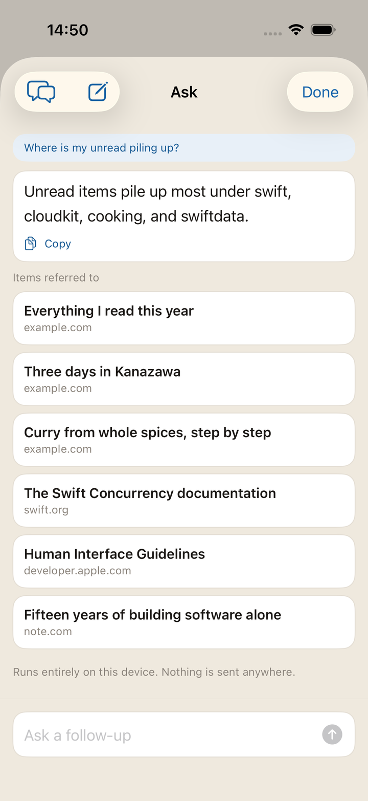
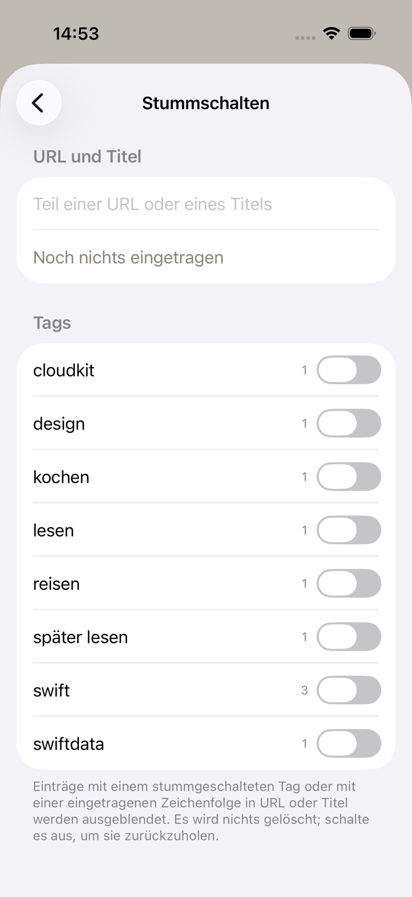
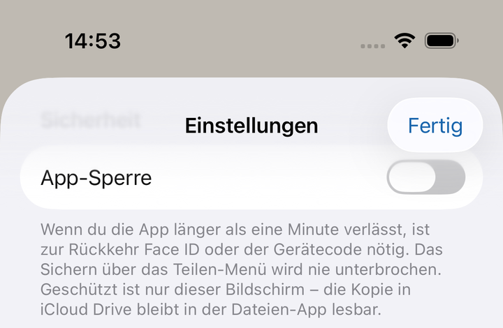

Eine iPhone-App, in die Sie Webseiten
einfach hineinwerfen.
Später graben Sie sie über Tags und Notizen wieder aus.
Ohne Konto iCloud-Sync Tags und Notizen
Demnächst im App Store

In dem Moment, in dem Sie eine Seite aus dem Teilen-Menü schicken, ist sie bereits gesichert. Titel und Bild holt die App danach nach. Schlechter Empfang lässt das Sichern selbst nicht scheitern.

Titel, URLs, Tags, Notizen und den Seitentext auf einmal durchsuchen. Nach Tag eingrenzen, nach Ungelesen und Favoriten trennen.
Tags und Notizen sind die Griffe, die Sie für sich selbst hinterlassen. Beliebig viele Tags — und was Sie schon einmal verwendet haben, wird vorgeschlagen.

Fragen Sie in eigenen Worten nach dem, was Sie gesammelt haben, und danach, wie die App funktioniert. Unter der Antwort stehen die verwendeten Einträge und lassen sich sofort öffnen.
Halten Sie einen einzelnen Artikel gedrückt und wählen Sie Zusammenfassung: Sie entsteht allein aus dem Text dieser Seite — damit Sie entscheiden können, ob Sie jetzt lesen.
Alles läuft auf Ihrem Gerät. Nichts wird nach außen gesendet. Nur auf Geräten verfügbar, die Apple Intelligence unterstützen.

Was Sie nicht sehen möchten, blenden Sie aus, indem Sie eine Zeichenfolge aus URL oder Titel hinterlegen. Ausschalten ist nicht dasselbe wie Löschen.
Auch ganze Tags lassen sich ausblenden. In beiden Fällen bleibt die Regel erhalten und kann ein- und ausgeschaltet werden.

Eine gesicherte URL ist nichts anderes als Ihr Verlauf. Sie geht nie an einen Server des Entwicklers — genauer gesagt: es gibt keinen. Das Synchronisieren übernimmt Apples iCloud.
Auch vor Ort lässt sich das verbergen. Mit eingeschalteter App-Sperre fragt die App beim Öffnen nach Face ID / Touch ID oder dem Gerätecode. Standardmäßig ist sie aus.
Näheres steht in der Datenschutzerklärung.
Erscheint auf allen Geräten mit demselben Apple-Account. Ein Registrierungsschritt entfällt.
Einmal pro Woche wird alles als JSON in iCloud Drive abgelegt. Die Kopie überdauert das Löschen der App.
Ein Widget zeigt, wie viel ungelesen ist. Bei eingeschalteter App-Sperre nur die Anzahl, sonst nichts.
Sichern und Suchen lassen sich aus Kurzbefehlen aufrufen und in Automationen einbauen.
Es gibt auch eine vollständige Funktionsliste.
Sichern, finden, öffnen, ordnen, ausblenden, sichern lassen. Alle Handgriffe stehen auf der Anleitungsseite.
Benannt ist die App nach dem Eichelhäher — auf Japanisch kakesu. Der Vogel versteckt Eicheln einzeln an verschiedenen Stellen, merkt sich was, wo und wann, und gräbt sie später wieder aus. Genau dafür ist diese App da, also behielt sie den Namen des Vogels.
Fehlermeldungen und Wünsche gehen über die Kontaktseite.
Demnächst im App Store